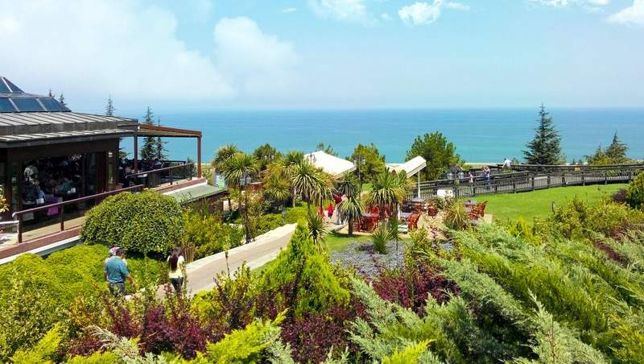

-
Samsunda gezilecek görülecek yerler
Bandırma Vapuru (Milli Mücadele Açık Hava Müzesi)

Büyük önder Mustafa Kemal Atatürk’ü ve kurmaylarını Samsun’a getiren Bandırma Vapuru’nun aslına uygun kopyası, Canik ilçesindeki Bandırma Plajı’nda sergileniyor.
2003 yılında Bandırma Vapur Müzesi adıyla açılan, 2005-2008 yılları arasındaki yenileme çalışmalarının ardından Bandırma Vapuru ve Milli Mücadele Açık Hava Müzesi olarak ziyaretçi kabul etmeye başlayan müzede İzmir’in kurtuluşunu betimleyen, Türkiye’nin en uzun kabartması olan 300 parçalık seramik kabartma duvarı bulunuyor.
Bu eserin yanı sıra Kurtuluş Savaşı’nda şehit düşen 1200 kişinin isimlerinin yazılı olduğu duvar ve aslına uygun dekore edilmiş vapur müzenin görülmesi gereken kısımları olarak öne çıkıyor.
Amistos Tepesi
 Tarihi MÖ 3. yüzyıla dayanan ve 1995 yılında keşfedilen Amisos Tepesi, Samsun’un batı yönündeki girişinde yer alıyor. Şehri kuşbakışı izleyerek yapacağınız kısa teleferik yolculuğunun ardından ulaşabileceğiniz tepe, Helenistik dönemde yaşadığı saptanan ve Pontus Krallığı’nın üst düzey yönetici ailelerinden birine ait olduğu tahmin edilen 2 adet mezara (Tümülüs) ev sahipliği yapılıyor.
Önceleri Baruthane Tepesi olarak adlandırılan ve 2008 yılında yapılan çalışmalarla turizme kazandırılan tepeden çıkartılan eserleri, Samsun Arkeoloji ve Etnografya Müzesi’ne yapacağınız ziyaret sırasında görebilirsiniz.
Arkeoloji ve Etnografya Müzesi

Yeni valilik binası yakınında yer alan müzede, Samsun ve çevresinde yapılan kazı çalışmaları sırasında bulunan Kalkolitik, İlk Tunç, Hitit, Hellenistik, Roma ve Osmanlı dönemlerine ait eserler sergileniyor.
1981 yılından beri Samsun eski fuar alanı içerisindeki binada ziyaretçilerini ağırlayan müzenin en önemli eserlerinin başında Amisos Tepesi’ndeki kümülüsten çıkartılan Amisos Hazinesi geliyor. Samsun Arkeoloji ve Etnografya Müzesi’ni pazartesi hariç haftanın her günü, 08.00-17.00 saatleri arasında ziyaret edebilirsiniz.
Büyük Cami

1300 yılında Hıdır Bey tarafından inşa ettirilen Büyük Camii, Kale Mahallesi’ndeki Saathane Meydanı yakınında bulunuyor.
1869 yılındaki yangında yıkılan ve 1884 yılında Batumlu Hacı Ali Efendi tarafından tekrar inşa ettirilen dini yapı, şehrin en büyük ibadet yeri olarak biliniyor.
Mermer mihrabının ve ahşap minberinin en dikkat çekici noktalarını oluşturduğu yapının kubbesinde ziyaretçilerin büyük beğenisini kazanan bitkisel motifler yer alıyor.
Ladik Akdağ Kayak Merkezi

Samsun halkının ve çevre illerden gelen kayak severlerin yoğun bir şekilde kullandığı Ladik Akdağ Kayak Merkezi, Akdağ’ın zirvesindeki Uzunyazı ve Yemişen Tepeleri arasında yer alıyor.
Farklı zorluk tipindeki uzun pistleri ile dikkat çeken tesisin kayasız zemini kayakçılara rahatlık ve risksiz bir ortam sunuyor. Yılın değişik dönemlerinde şenliklerin düzenlendiği kayak merkezinin her yerinden Ladik Gölü görülebiliyor.
1500 metre uzunluğunda telesiyeje sahip merkezin yakınında konaklama imkânı sağlayan, hizmet kalitesi iyi seviyede tesisler bulunuyor.
Amazon Köyü

Üniversite ve belediye işbirliği ile yapılan ve 2.5 dönüm üzerine kurulu Amazon Köyü, Amisos Tepesi’nin karşısında yer alıyor.
Terme ilçesi, Gölyazı Beldesi’nde yaşadığına inanılan efsanevi amazon Kadınları’nın günlük yaşamlarından kesitler sunmayı amaçlayan köyde 20’nin üzerinde temsili balmumu Amazon heykeli, kabartmalar ve günlük hayatta kullandıkları düşünülen eşyaların kopyaları sergileniyor.
Ladik Gölü

Yüzen adacıkları ile ünlü Ladik Gölü, çevresindeki dağ ve ormanla birlikte oluşturduğu manzara sayesinde ziyaretçilerini büyülüyor.
Doğa tutkunu tatilcilerin, Samsun gezilecek yerler listelerinde mutlaka yer verdikleri gölde olta balıkçılığı ve su kayağı, sörf gibi su sporları yapılabiliyor. Aynı adlı ilçenin doğusunda bulunan tektonik göl, birçok kuş ve balık türüne ev sahipliği yapıyor.
Huzur bulmak ve Samsun’un doğasını keşfetmek için ziyaret edebileceğiniz göl, 870 hektarlık bir alanı kaplıyor.
Tekkeköy Mağaraları

Samsun’un aynı adlı ilçesinin sınırları içerisindeki alanın geçmişi Yontma Taş Devri’ne kadar uzanıyor. Bölge Frig ve Hitit gibi Anadolu’nun önemli medeniyetlerinden izler taşıyor
Karadeniz Bölgesi’nin en eski yerleşim bölgesi unvanına sahip Tekkeköy Mağaraları’nın 96 bin m² kısmı günümüzde ziyaret edilebiliyor. 2014 yılında, bölgedeki restore edilmiş Rum evlerinden birinde açılan Tekkeköy Mağaraları Arkeoloji Vadisi Müze Evi, Türkiye’nin ilk imitasyon müzesi olarak bölgeden çıkartılan buluntuların kopyalarına ev sahipliği yapıyor.
Atatürk Anıtı(Onur Anıtı)

Samsun Valisi Kazım Paşa tarafından, Samsunlular adına Avusturyalı heykeltıraş Heinrich Krippel’e yaptırılan 4.75 m yüksekliğindeki anıt, İlkadım’daki Atatürk Parkı’nda yer alıyor.
1931 yılında dikilen ve şehrin simgesi olarak görülen Onur Anıtı’nın kaidesinin iki yanında sandalın yanında duran, cepheye malzeme taşıyan insanları ve savaşı tasvir eden iki kabartma bulunuyor.
Diğer iki yanında ise Mustafa Kemal Atatürk’ün Samsun’a çıkış tarihini ve anıtın Samsun halkı tarafından dikildiğini belirten 2 cümle yer alıyor.
İlk Adım Anıtı

1919 yılında Atatürk’ün Bandırma Vapuru’ndan indiği iskelenin önünde bulunan anıt, tarihi seven gezginlerin Samsun gezilecek yerler listelerinde şehrin önemli simgelerinden biri olarak kendisine yer buluyor.
Atatürk Bulvarı üzerindeki iskelede yer alan ve Atatürk’ün doğumunun 100. yılında yaptırılan İlk Adım Anıtı’nın tasarımı Mimar Seçin Viter’in imzasını taşıyor.
Kabaceviz Şelalesi

Tekkeköy ilçe sınırları içerisinde kalan tabiat harikası Kabaceviz Şelaleleri, il merkezine 32 km uzaklıkta bulunuyor. En güzel dönemi olan mayıs ve ekim ayları arasında ziyaretçi akınına uğrayan bölgede dağcılık, trekking ve foto safari yapılabiliyor. Bölge turizminin önemli noktalarından biri sayılan şelalelerin yakınındaki alanlarda dilerseniz ailenizle piknik yapabilirsiniz.